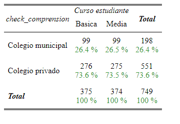
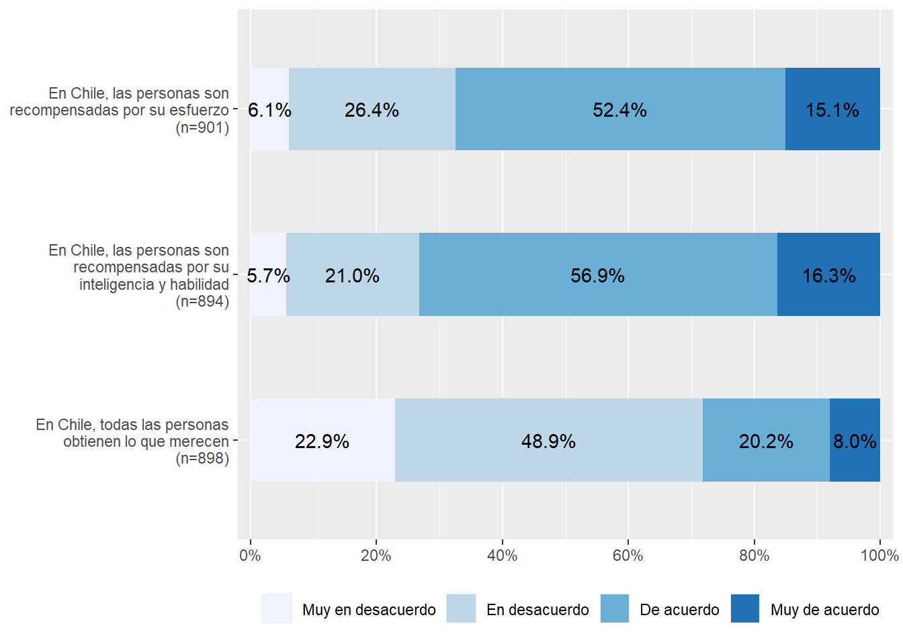
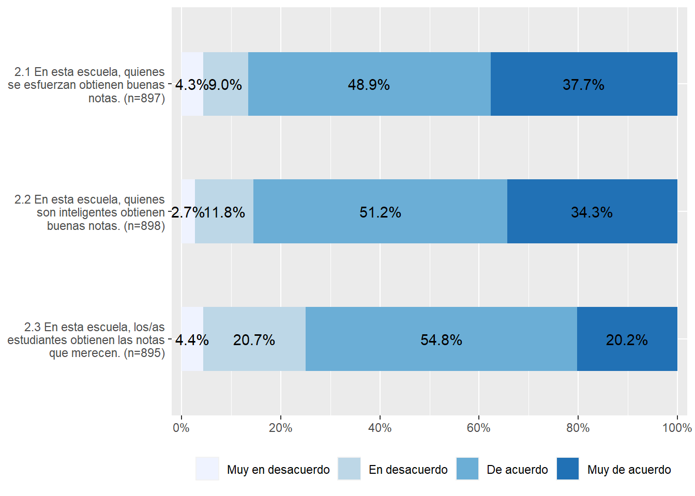
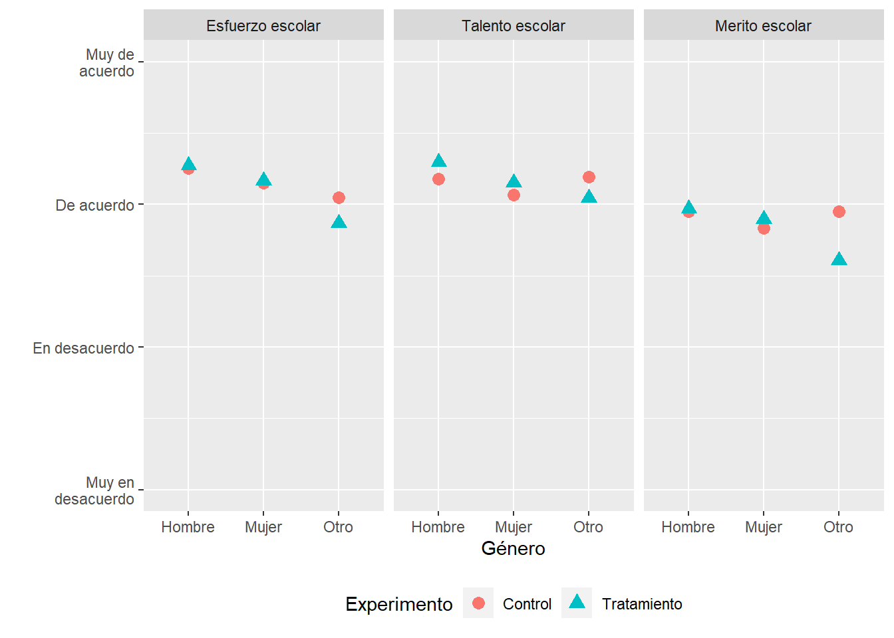
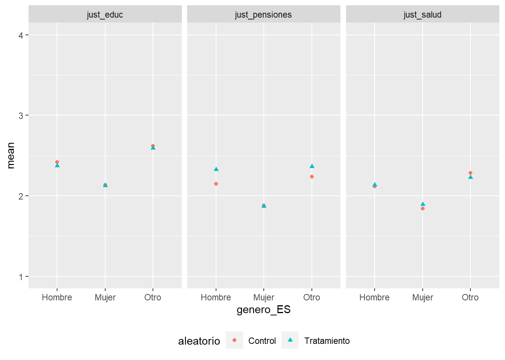
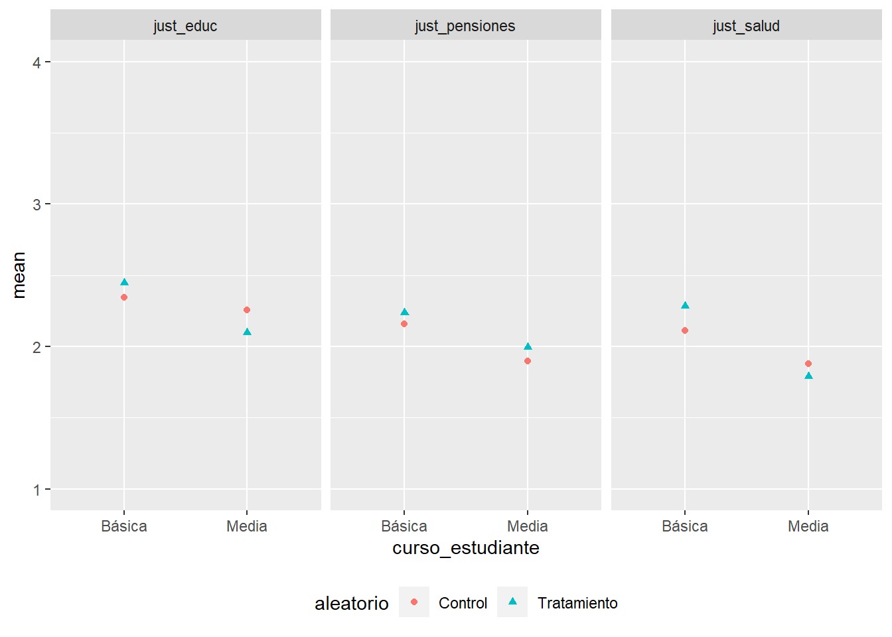

pacman::p_load(dplyr, sjPlot, stargazer, kableExtra, texreg, haven, sjmisc, ggplot2, quarto, here, ggpubr, sjlabelled, webshot)test-experiment
load(here::here("input/data/proc/ola1.RData"))
sjmisc::frq(proc_datos$aleatorio)x <categorical>
# total N=902 valid N=902 mean=1.51 sd=0.50
Value | N | Raw % | Valid % | Cum. %
--------------------------------------------
Tratamiento | 444 | 49.22 | 49.22 | 49.22
Control | 458 | 50.78 | 50.78 | 100.00
<NA> | 0 | 0.00 | <NA> | <NA>proc_datos$aleatorio <- factor(proc_datos$aleatorio, levels = c("Control", "Tratamiento"))
sjmisc::frq(proc_datos$aleatorio)x <categorical>
# total N=902 valid N=902 mean=1.49 sd=0.50
Value | N | Raw % | Valid % | Cum. %
--------------------------------------------
Control | 458 | 50.78 | 50.78 | 50.78
Tratamiento | 444 | 49.22 | 49.22 | 100.00
<NA> | 0 | 0.00 | <NA> | <NA>proc_datos$curso_estudiante <- set_label(x = proc_datos$curso_estudiante,label = "Curso estudiante")Caracterización de la muestra
frq(proc_datos$genero_ES)x <categorical>
# total N=902 valid N=902 mean=1.56 sd=0.59
Value | N | Raw % | Valid % | Cum. %
---------------------------------------
Hombre | 442 | 49.00 | 49.00 | 49.00
Mujer | 415 | 46.01 | 46.01 | 95.01
Otro | 45 | 4.99 | 4.99 | 100.00
<NA> | 0 | 0.00 | <NA> | <NA>frq(proc_datos$curso_estudiante)Curso estudiante (x) <character>
# total N=902 valid N=902 mean=1.50 sd=0.50
Value | N | Raw % | Valid % | Cum. %
---------------------------------------
Básica | 451 | 50 | 50 | 50
Media | 451 | 50 | 50 | 100
<NA> | 0 | 0 | <NA> | <NA>Establecimientos
Piloto: Escuela Capitán José Luis Araneda de Renca (29 estudiantes). RBD 10204. Dependencia Municipal
Colegio Nuestra señora del carmen (Maipú): 121 estudiantes que corresponden a 2 sextos básicos y 2 primeros medios. RBD 25739. Dependencia Particular subvencionado
Colegio San Alberto (Santiago): RBD 8657. Dependencia Particular Subvencionado
Colegio Santa Isabel de Hungría (La Cisterna): RBD 9758. Dependencia Particular Subvencionado
Colegio compañia de María Seminario (Providencia): RBD 8950. Dependencia Particular privado
Colegio Reino de Dinamarca (Maipú): RBD 9889. Dependencia Municipal
Colegio San Francisco de Sales (Maipú) 65 estudiantes, que corresponden a 32 de sexto y 33 de primero medio. RBD 26368. Dependencia Particular subvencionado
Liceo Miguel Rafael Prado (Independencia): 85 sexto, 12 primero medio. RBD 8589. Dependencia Particular subvencionado
Resumen: 2 colegios municipales; 5 colegios particular subvencionado; colegio particular privado
Descriptivos generales
sjmisc::descr(proc_datos,
show = c("label","range", "mean", "sd", "NA.prc", "n"))%>% # Selecciona estadísticos
kable(.,"markdown") # Esto es para que se vea bien en quarto| var | label | n | NA.prc | mean | sd | range | |
|---|---|---|---|---|---|---|---|
| 7 | aleatorio | aleatorio | 902 | 0.0000000 | 1.4922395 | 0.5002171 | 1 (1-2) |
| 32 | merit_esfuerzo_percep_ES | En Chile, las personas son recompensadas por su esfuerzo | 901 | 0.1108647 | 2.7647059 | 0.7775443 | 3 (1-4) |
| 38 | merit_talento_percep_ES | En Chile, las personas son recompensadas por su inteligencia y habilidad | 894 | 0.8869180 | 2.8389262 | 0.7592692 | 3 (1-4) |
| 88 | school_esfuerzo | 2.1 En esta escuela, quienes se esfuerzan obtienen buenas notas. | 897 | 0.5543237 | 3.1995541 | 0.7758059 | 3 (1-4) |
| 91 | school_talento | 2.2 En esta escuela, quienes son inteligentes obtienen buenas notas. | 898 | 0.4434590 | 3.1714922 | 0.7342476 | 3 (1-4) |
| 90 | school_merito | 2.3 En esta escuela, los/as estudiantes obtienen las notas que merecen. | 895 | 0.7760532 | 2.9083799 | 0.7586099 | 3 (1-4) |
| 27 | just_educ | 9.3 Está bien que aquellos que puedan pagar más tengan mejor educación | 897 | 0.5543237 | 2.2842809 | 0.8954924 | 3 (1-4) |
| 29 | just_salud | 9.4 Está bien que aquellos que puedan pagar más tengan mejor acceso a salud | 895 | 0.7760532 | 2.0122905 | 0.9417396 | 3 (1-4) |
| 28 | just_pensiones | 9.5 Está bien que en Chile las personas con mayores ingresos puedan tener mejores pensiones que las personas de ingresos más bajos. | 898 | 0.4434590 | 2.0712695 | 0.8715999 | 3 (1-4) |
| 43 | ne_madre | 26. ¿Cuál es el último curso o nivel de estudios que completó tu madre ? | 902 | 0.0000000 | 25.5133038 | 38.5455226 | 98 (1-99) |
| 44 | ne_padre | 27. ¿Cuál es el último curso o nivel de estudios que completó tu padre ? | 902 | 0.0000000 | 32.0509978 | 41.5001659 | 98 (1-99) |
| 30 | libros_hogar | 30. Aproximadamente ¿cuántos libros hay en tu hogar? | 902 | 0.0000000 | 2.6385809 | 6.0326689 | 98 (1-99) |
| 24 | genero_ES | genero_ES | 902 | 0.0000000 | 1.5598670 | 0.5887091 | 2 (1-3) |
| 15 | check_atencion | Si está leyendo correctamente esta pregunta, marca la opción En desacuerdo | 902 | 0.0000000 | 2.1019956 | 0.4834858 | 3 (1-4) |
| 18 | check_tratamiento | check_tratamiento | 444 | 50.7760532 | 1.7184685 | 0.4502534 | 1 (1-2) |
| 17 | check_control | check_control | 458 | 49.2239468 | 1.7205240 | 0.4492324 | 1 (1-2) |
| 87 | school_dependencia | school_dependencia | 749 | 16.9623060 | 1.0707610 | 0.2565966 | 1 (1-2) |
| 48 | notas_merit | 5. ¿Te parece que este promedio fue más o menos de lo que merecías? | 901 | 0.1108647 | 1.9489456 | 0.4709936 | 2 (1-3) |
| 47 | notas_esfuerzo | 7. Tomando en cuenta el tiempo que le dedicas a tus estudios, las notas que me saco son… | 893 | 0.9977827 | 1.9675252 | 0.5336840 | 2 (1-3) |
| 73 | pp_futura_pol | 17.1 Cuando sea adulto(a) podré participar en la política | 901 | 0.1108647 | 2.5493896 | 0.9037282 | 3 (1-4) |
| 78 | pp_presente_pol | 17.2 Comprendo bien las problemáticas políticas de nuestro país | 896 | 0.6651885 | 2.6450893 | 0.8774890 | 3 (1-4) |
| 82 | school_ciudadania | 19. ¿Cuánta importancia dirías tú que se le da a la Formación Ciudadana en este establecimiento? | 898 | 0.4434590 | 2.8775056 | 0.8607155 | 3 (1-4) |
| 22 | ciudadania_voto_es | 10.1 Votar en todas las elecciones nacionales | 902 | 0.0000000 | 3.1662971 | 2.9477611 | 87 (1-88) |
| 21 | ciudadania_pp | 10.2 Unirse a un partido político | 902 | 0.0000000 | 2.3436807 | 4.1323094 | 87 (1-88) |
| 19 | ciudadania_ley | 10.5 Obedecer siempre la ley | 902 | 0.0000000 | 3.3603104 | 3.2942790 | 98 (1-99) |
| 20 | ciudadania_op | 10.6 Respetar el derecho de otros a tener su propia opinión | 902 | 0.0000000 | 3.5753880 | 3.2598138 | 98 (1-99) |
| 74 | pp_futura_voto | 11.2 Votar en las elecciones presidenciales | 902 | 0.0000000 | 3.4478936 | 2.9458771 | 87 (1-88) |
| 72 | pp_futura_candidatos | 11.3 Informarte sobre los candidatos antes de votar en una elección | 902 | 0.0000000 | 3.3137472 | 0.8598903 | 3 (1-4) |
| 77 | pp_presente_marcha | 12.1 Participar en una marcha o manifestación pacífica | 902 | 0.0000000 | 2.0665188 | 5.6196509 | 98 (1-99) |
| 80 | pp_presente_toma | 12.3 Participar en una toma (ej: ocupar el espacio del colegio sin dejar entrar a profesores) | 902 | 0.0000000 | 2.6252772 | 8.5344080 | 98 (1-99) |
| 79 | pp_presente_rrss | 13.2 Usar Redes Sociales para informarse sobre temas políticos y sociales | 902 | 0.0000000 | 2.6286031 | 3.5030638 | 98 (1-99) |
| 75 | pp_presente_compartir | 13.4 Compartir contenido sobre un tema político o social publicado por otra persona | 902 | 0.0000000 | 1.7549889 | 3.0828106 | 87 (1-88) |
| 76 | pp_presente_like | 13.6 Dar “Me gusta” a una publicación en línea sobre un tema político o social | 902 | 0.0000000 | 2.4212860 | 3.5272699 | 98 (1-99) |
| 85 | school_ciudadania_es | 18.1 Los estudiantes pueden manifestar abiertamente su desacuerdo con sus profesores(as) | 902 | 0.0000000 | 2.7106430 | 0.8873747 | 3 (1-4) |
| 86 | school_ciudadania_op | 18.2 Los(as) profesores(as) piden a los estudiantes expresar sus opiniones | 902 | 0.0000000 | 3.4179601 | 4.5809320 | 98 (1-99) |
| 84 | school_ciudadania_dif | 18.5 Los(as) profesores(as) piden a los estudiantes conversar los temas con gente que opina distinto | 902 | 0.0000000 | 3.1629712 | 5.9306989 | 98 (1-99) |
| 83 | school_ciudadania_class | 18.6 Los(as) profesores(as) presentan los temas desde distintos enfoques al explicarlos en clases | 902 | 0.0000000 | 3.1297118 | 3.2996525 | 98 (1-99) |
| 89 | school_merit_pref | 3. ¿Qué es más importante para obtener buenas notas, el esfuerzo o la inteligencia? Marca en la casilla del centro si te parece que ambas son igualmente importantes, o más cerca de esfuerzo o de inteligencia si es que alguna de ellas te parece más imp | 901 | 0.1108647 | 5.0998890 | 2.2781596 | 10 (0-10) |
| 67 | padres_ricos_percep_ES | En Chile, quienes tienen padres ricos les va mejor en la vida | 890 | 1.3303769 | 3.0000000 | 0.9486240 | 3 (1-4) |
| 10 | buenos_contactos_percep_ES | En Chile, quienes tienen buenos contactos les va mejor en la vida | 889 | 1.4412417 | 3.0483690 | 0.8508873 | 3 (1-4) |
| 35 | merit_esfuerzo_pref_ES | 1.4 En Chile, quienes tienen buenos contactos les va mejor en la vida. | 902 | 0.0000000 | 4.1263858 | 8.1169033 | 98 (1-99) |
| 41 | merit_talento_pref_ES | 1.6 Quienes poseen más talento deberían obtener mayores recompensas que quienes poseen menos talento. | 902 | 0.0000000 | 3.9678492 | 11.0373228 | 98 (1-99) |
| 70 | padres_ricos_pref_ES | 1.7. Está bien que quienes tienen padres ricos les vaya bien en la vida. | 902 | 0.0000000 | 3.3359202 | 8.4549611 | 98 (1-99) |
| 13 | buenos_contactos_pref_ES | 1.8 Está bien que quienes tienen buenos contactos les vaya bien en la vida. | 902 | 0.0000000 | 3.3835920 | 8.2339055 | 98 (1-99) |
| 50 | oportunidades_percep_ES | En Chile, todas las personas tienen las mismas oportunidades para salir adelante | 898 | 0.4434590 | 2.3630290 | 1.0734729 | 3 (1-4) |
| 96 | social_merito_percep_ES | En Chile, todas las personas obtienen lo que merecen | 898 | 0.4434590 | 2.1325167 | 0.8572795 | 3 (1-4) |
| 52 | p10_3 | 10.3 Aprender de la historia del país | 902 | 0.0000000 | 3.3869180 | 5.5883546 | 98 (1-99) |
| 53 | p10_4 | 10.4 Participar en protestas pacíficas (ej: una marcha en la calle) en contra de las leyes que considera injustas | 902 | 0.0000000 | 2.6219512 | 4.3983255 | 98 (1-99) |
| 54 | p10_7 | 10.7 Apoyar a personas en peor situación que uno | 902 | 0.0000000 | 3.7516630 | 6.4032432 | 98 (1-99) |
| 55 | p10_8 | 10.8 Siempre pagar los impuestos | 902 | 0.0000000 | 3.3592018 | 4.0676328 | 87 (1-88) |
| 57 | p12_2 | 12.2 Participar en una marcha o manifestación que resultó en destrucción de propiedad | 902 | 0.0000000 | 2.3691796 | 7.2281715 | 98 (1-99) |
| 58 | p13_1 | 13.1 Buscar sitios web de Internet para encontrar información sobre temas políticos o sociales | 902 | 0.0000000 | 2.7161863 | 3.4914425 | 98 (1-99) |
| 59 | p13_5 | 13.5 Comentar una publicación en línea sobre un tema político o social | 902 | 0.0000000 | 1.6263858 | 1.1164654 | 4 (1-5) |
| 56 | p11_1 | 11.1 Votar en las elecciones municipales | 902 | 0.0000000 | 3.0121951 | 2.9788127 | 87 (1-88) |
| 63 | p18_3 | 18.3 Los estudiantes plantean hechos políticos de actualidad para ser discutidos en clases | 902 | 0.0000000 | 2.5631929 | 5.2478946 | 98 (1-99) |
| 64 | p9_1 | 9.1 Las diferencias económicas entre ricos y pobres en Chile son demasiado grandes | 902 | 0.0000000 | 3.3669623 | 3.2864595 | 98 (1-99) |
| 65 | p9_2 | 9.2 Es responsabilidad del gobierno reducir las diferencias económicas entre las personas con altos ingresos y aquellas con bajos ingresos | 902 | 0.0000000 | 3.5864745 | 7.9377961 | 98 (1-99) |
| 93 | social_merit_pref_ES | 9.6 Está bien que las personas más inteligentes y/o talentosas ganen más dinero, aun cuando requieran esforzarse menos para ello | 902 | 0.0000000 | 3.1042129 | 7.1573565 | 98 (1-99) |
| 60 | p14 | 14. ¿Quién es la persona adulta de tu hogar con quien más conversas generalmente? | 902 | 0.0000000 | 2.8580931 | 3.6384669 | 98 (1-99) |
| 61 | p15 | 15. En general ¿Cuánto tiempo conversas con este adulto al día? (por ejemplo, durante el trayecto a la escuela, durante las comidas u otras actividades que realizan en conjunto) | 902 | 0.0000000 | 2.8558758 | 1.1313629 | 3 (1-4) |
| 1 | P16_o1 | 16. ¿De qué temas conversan generalmente con este adulto? | Colegio | 902 | 0.0000000 | 0.9534368 | 0.2108183 | 1 (0-1) |
| 2 | P16_o2 | 16. ¿De qué temas conversan generalmente con este adulto? | Deportes | 902 | 0.0000000 | 0.4168514 | 0.4933114 | 1 (0-1) |
| 3 | P16_o3 | 16. ¿De qué temas conversan generalmente con este adulto? | Política | 902 | 0.0000000 | 0.1640798 | 0.3705535 | 1 (0-1) |
| 4 | P16_o4 | 16. ¿De qué temas conversan generalmente con este adulto? | Películas o series | 902 | 0.0000000 | 0.4911308 | 0.5001987 | 1 (0-1) |
| 5 | P16_o5 | 16. ¿De qué temas conversan generalmente con este adulto? | Juegos | 902 | 0.0000000 | 0.3736142 | 0.4840314 | 1 (0-1) |
| 6 | P16_o6 | 16. ¿De qué temas conversan generalmente con este adulto? | Otro, ¿Cuál? | 902 | 0.0000000 | 0.3536585 | 0.4783700 | 1 (0-1) |
| 31 | merit_esfuerzo_percep_AP | En Chile, las personas son recompensadas por su esfuerzo | 179 | 80.1552106 | 2.3966480 | 0.8239327 | 3 (1-4) |
| 33 | merit_esfuerzo_percep_PROF | En Chile, las personas son recompensadas por su esfuerzo | 781 | 13.4146341 | 2.0883483 | 0.7949391 | 3 (1-4) |
| 39 | merit_talento_percep_PROF | En Chile, las personas son recompensadas por su inteligencia y habilidad | 781 | 13.4146341 | 2.2343150 | 0.6386287 | 2 (1-3) |
| 37 | merit_talento_percep_AP | En Chile, las personas son recompensadas por su inteligencia y habilidad | 179 | 80.1552106 | 2.5083799 | 0.7887461 | 3 (1-4) |
| 66 | padres_ricos_percep_AP | En Chile, quienes tienen padres ricos les va mucho mejor en la vida | 177 | 80.3769401 | 3.2203390 | 0.9058107 | 3 (1-4) |
| 68 | padres_ricos_percep_PROF | En Chile, quienes tienen padres ricos les va mejor en la vida | 781 | 13.4146341 | 3.5364917 | 0.7943793 | 3 (1-4) |
| 9 | buenos_contactos_percep_AP | En Chile, quienes tienen buenos contactos les va mucho mejor en la vida | 177 | 80.3769401 | 3.3276836 | 0.7796938 | 3 (1-4) |
| 11 | buenos_contactos_percep_PROF | En Chile, quienes tienen buenos contactos les va mejor en la vida | 781 | 13.4146341 | 3.4033291 | 0.7957832 | 3 (1-4) |
| 49 | oportunidades_percep_AP | En Chile,todas las personas tienen las mismas oportunidades para salir adelante | 179 | 80.1552106 | 1.7597765 | 0.9441434 | 3 (1-4) |
| 51 | oportunidades_percep_PROF | En Chile, todas las personas tienen las mismas oportunidades para salir adelante | 781 | 13.4146341 | 1.2624840 | 0.4402662 | 1 (1-2) |
| 95 | social_merito_percep_AP | En Chile,todas las personas obtienen lo que merecen | 178 | 80.2660754 | 1.7977528 | 0.7079815 | 3 (1-4) |
| 97 | social_merito_percep_PROF | En Chile, todas las personas obtienen lo que merecen | 781 | 13.4146341 | 1.5185659 | 0.4999754 | 1 (1-2) |
| 62 | p15_Apoderado | ¿Se consideras perteneciente a alguno de los siguientes pueblos originarios? | 180 | 80.0443459 | 5.0555556 | 7.1580109 | 98 (1-99) |
| 26 | iden_pol_AP | 13. Como usted sabe, tradicionalmente la gente define las posiciones políticas como más cercanas a la izquierda, al centro o a la derecha. Por favor, indíqueme, ¿con cuál de las siguientes posiciones usted se identifica o simpatiza más? | 180 | 80.0443459 | 6.8055556 | 10.0095470 | 98 (1-99) |
| 23 | genero_AP | genero_AP | 180 | 80.0443459 | 1.8888889 | 0.3151463 | 1 (1-2) |
| 25 | genero_PROF | genero_PROF | 781 | 13.4146341 | 1.6094750 | 0.6343681 | 2 (1-3) |
| 81 | religion_AP | ¿Cómo se declara usted en términos religiosos? Indique una de las siguientes opciones. | 180 | 80.0443459 | 3.1888889 | 7.6449047 | 98 (1-99) |
| 34 | merit_esfuerzo_pref_AP | 1.5 Quienes más se esfuerzan deberían obtener mayores recompensas que quienes se esfuerzan menos. | 180 | 80.0443459 | 3.3277778 | 0.8705649 | 3 (1-4) |
| 40 | merit_talento_pref_AP | 1.6 Quienes poseen más talento deberían obtener mayores recompensas que quienes poseen menos talento. | 180 | 80.0443459 | 3.6833333 | 10.1686752 | 98 (1-99) |
| 69 | padres_ricos_pref_AP | 1.7. Está bien que quienes tienen padres ricos les vaya bien en la vida. | 180 | 80.0443459 | 3.7555556 | 12.0054095 | 98 (1-99) |
| 12 | buenos_contactos_pref_AP | 1.8 Está bien que quienes tienen buenos contactos les vaya bien en la vida. | 180 | 80.0443459 | 3.2888889 | 10.2065205 | 98 (1-99) |
| 92 | social_merit_pref_AP | 5.6 Está bien que las personas más inteligentes y/o talentosas ganen más dinero, aun cuando requieran esforzarse menos para ello | 180 | 80.0443459 | 3.3555556 | 10.1978321 | 98 (1-99) |
| 36 | merit_esfuerzo_pref_PROF | 1.5 Quienes más se esfuerzan deberían obtener mayores recompensas que quienes se esfuerzan menos. | 781 | 13.4146341 | 3.3085787 | 0.6818456 | 2 (2-4) |
| 42 | merit_talento_pref_PROF | 1.6 Quienes poseen más talento deberían obtener mayores recompensas que quienes poseen menos talento. | 781 | 13.4146341 | 2.6030730 | 0.7169671 | 3 (1-4) |
| 71 | padres_ricos_pref_PROF | 1.7. Está bien que quienes tienen padres ricos les vaya bien en la vida. | 781 | 13.4146341 | 2.5915493 | 0.8091656 | 3 (1-4) |
| 14 | buenos_contactos_pref_PROF | 1.8 Está bien que quienes tienen buenos contactos les vaya bien en la vida. | 781 | 13.4146341 | 2.4302177 | 0.7674858 | 3 (1-4) |
| 94 | social_merit_pref_PROF | 4.6 Está bien que las personas más inteligentes y/o talentosas ganen más dinero, aun cuando requieran esforzarse menos para ello | 781 | 13.4146341 | 2.3393086 | 0.8822198 | 3 (1-4) |
| 45 | nota_obtenida | 4. ¿Cuál fue tu promedio final de notas el año pasado? Si no lo recuerdas exactamente, indica una nota aproximada. (entre 1.0 y 7.0) | 902 | 0.0000000 | 6.0138171 | 0.6474114 | 6 (1-7) |
| 46 | nota_pref | 6. En caso que tu promedio no es lo que merecías ¿Qué promedio piensas que merecías? (entre 1.0 y 7.0) | 202 | 77.6053215 | 5.9306931 | 1.0356571 | 6 (1-7) |
| 8 | apoderado | D6. ¿Cuál es su relación con {0}? | 180 | 80.0443459 | 1.0888889 | 0.4133105 | 3 (1-4) |
| 16 | check_comprension | check_comprension | 902 | 0.0000000 | 0.7195122 | 0.4494868 | 1 (0-1) |
Revisión check’s de respuesta
- Tratamiento
frq(proc_datos$check_tratamiento)x <categorical>
# total N=902 valid N=444 mean=1.72 sd=0.45
Value | N | Raw % | Valid % | Cum. %
--------------------------------------------------
Colegio Municipal | 125 | 13.86 | 28.15 | 28.15
Colegio Privado | 319 | 35.37 | 71.85 | 100.00
<NA> | 458 | 50.78 | <NA> | <NA>sjt.xtab(proc_datos$check_tratamiento, proc_datos$curso_estudiante,
show.col.prc=TRUE,
show.summary=FALSE,
encoding="UTF-8")| check_tratamiento | Curso estudiante | Total | |
| Básica | Media | ||
| Colegio Municipal | 65 30 % |
60 26.4 % |
125 28.2 % |
| Colegio Privado | 152 70 % |
167 73.6 % |
319 71.8 % |
| Total | 217 100 % |
227 100 % |
444 100 % |
sjt.xtab(proc_datos$check_tratamiento, proc_datos$genero_ES,
show.col.prc=TRUE,
show.summary=FALSE,
encoding="UTF-8")| check_tratamiento | genero_ES | Total | ||
| Hombre | Mujer | Otro | ||
| Colegio Municipal | 57 26.6 % |
59 28.5 % |
9 39.1 % |
125 28.2 % |
| Colegio Privado | 157 73.4 % |
148 71.5 % |
14 60.9 % |
319 71.8 % |
| Total | 214 100 % |
207 100 % |
23 100 % |
444 100 % |
- Control
frq(proc_datos$check_control)x <categorical>
# total N=902 valid N=458 mean=1.72 sd=0.45
Value | N | Raw % | Valid % | Cum. %
--------------------------------------------------
Colegio Municipal | 128 | 14.19 | 27.95 | 27.95
Colegio Privado | 330 | 36.59 | 72.05 | 100.00
<NA> | 444 | 49.22 | <NA> | <NA>sjt.xtab(proc_datos$check_control, proc_datos$curso_estudiante,
show.col.prc=TRUE,
show.summary=FALSE,
encoding="UTF-8")| check_control | Curso estudiante | Total | |
| Básica | Media | ||
| Colegio Municipal | 65 27.8 % |
63 28.1 % |
128 27.9 % |
| Colegio Privado | 169 72.2 % |
161 71.9 % |
330 72.1 % |
| Total | 234 100 % |
224 100 % |
458 100 % |
sjt.xtab(proc_datos$check_control, proc_datos$genero_ES,
show.col.prc=TRUE,
show.summary=FALSE,
encoding="UTF-8")| check_control | genero_ES | Total | ||
| Hombre | Mujer | Otro | ||
| Colegio Municipal | 65 28.5 % |
57 27.4 % |
6 27.3 % |
128 27.9 % |
| Colegio Privado | 163 71.5 % |
151 72.6 % |
16 72.7 % |
330 72.1 % |
| Total | 228 100 % |
208 100 % |
22 100 % |
458 100 % |
- Atención
frq(proc_datos$check_atencion)Si está leyendo correctamente esta pregunta, marca la opción En desacuerdo (x) <numeric>
# total N=902 valid N=902 mean=2.10 sd=0.48
Value | Label | N | Raw % | Valid % | Cum. %
----------------------------------------------------------------
1 | Muy en desacuerdo | 33 | 3.66 | 3.66 | 3.66
2 | En desacuerdo | 775 | 85.92 | 85.92 | 89.58
3 | De acuerdo | 63 | 6.98 | 6.98 | 96.56
4 | Muy de acuerdo | 31 | 3.44 | 3.44 | 100.00
88 | No sabe | 0 | 0.00 | 0.00 | 100.00
99 | Preferiría no responder | 0 | 0.00 | 0.00 | 100.00
<NA> | <NA> | 0 | 0.00 | <NA> | <NA>sjt.xtab(proc_datos$check_atencion, proc_datos$curso_estudiante,
show.col.prc=TRUE,
show.summary=FALSE,
encoding="UTF-8")| Si está leyendo correctamente esta pregunta, marca la opción En desacuerdo |
Curso estudiante | Total | |
| Básica | Media | ||
| Muy en desacuerdo | 17 3.8 % |
16 3.5 % |
33 3.7 % |
| En desacuerdo | 379 84 % |
396 87.8 % |
775 85.9 % |
| De acuerdo | 38 8.4 % |
25 5.5 % |
63 7 % |
| Muy de acuerdo | 17 3.8 % |
14 3.1 % |
31 3.4 % |
| Total | 451 100 % |
451 100 % |
902 100 % |
sjt.xtab(proc_datos$check_atencion, proc_datos$genero_ES,
show.col.prc=TRUE,
show.summary=FALSE,
encoding="UTF-8")| Si está leyendo correctamente esta pregunta, marca la opción En desacuerdo |
genero_ES | Total | ||
| Hombre | Mujer | Otro | ||
| Muy en desacuerdo | 13 2.9 % |
18 4.3 % |
2 4.4 % |
33 3.7 % |
| En desacuerdo | 378 85.5 % |
367 88.4 % |
30 66.7 % |
775 85.9 % |
| De acuerdo | 34 7.7 % |
21 5.1 % |
8 17.8 % |
63 7 % |
| Muy de acuerdo | 17 3.8 % |
9 2.2 % |
5 11.1 % |
31 3.4 % |
| Total | 442 100 % |
415 100 % |
45 100 % |
902 100 % |
Hay 198 casos que no cumplen el Check de comprensión.
frq(proc_datos$check_comprension)x <numeric>
# total N=902 valid N=902 mean=0.72 sd=0.45
Value | N | Raw % | Valid % | Cum. %
--------------------------------------
0 | 253 | 28.05 | 28.05 | 28.05
1 | 649 | 71.95 | 71.95 | 100.00
<NA> | 0 | 0.00 | <NA> | <NA>proc_datos$check_comprension <- factor(proc_datos$check_comprension, labels = c("Colegio municipal", "Colegio privado"))sjt.xtab(proc_datos$check_comprension, proc_datos$curso_estudiante,
show.col.prc=TRUE,
show.summary=FALSE,
encoding="UTF-8",
file = here::here("output/tables/comprension_curso.html"))| check_comprension | Curso estudiante | Total | |
| Básica | Media | ||
| Colegio municipal | 130 28.8 % |
123 27.3 % |
253 28 % |
| Colegio privado | 321 71.2 % |
328 72.7 % |
649 72 % |
| Total | 451 100 % |
451 100 % |
902 100 % |
sjt.xtab(proc_datos$check_comprension, proc_datos$genero_ES,
show.col.prc=TRUE,
show.summary=FALSE,
encoding="UTF-8",
file = here::here("output/tables/comprension_genero.html"))| check_comprension | genero_ES | Total | ||
| Hombre | Mujer | Otro | ||
| Colegio municipal | 122 27.6 % |
116 28 % |
15 33.3 % |
253 28 % |
| Colegio privado | 320 72.4 % |
299 72 % |
30 66.7 % |
649 72 % |
| Total | 442 100 % |
415 100 % |
45 100 % |
902 100 % |
sjt.xtab(proc_datos$check_comprension, proc_datos$school_dependencia,
show.col.prc=TRUE,
show.summary=FALSE,
encoding="UTF-8",
file = here::here("output/tables/comprension_dependencia.html"))| check_comprension | school_dependencia | Total | ||
| Colegio Particular Subvencionado |
Colegio Municipal | Colegio Privado | ||
| Colegio municipal | 176 25.3 % |
22 41.5 % |
0 0 % |
198 26.4 % |
| Colegio privado | 520 74.7 % |
31 58.5 % |
0 0 % |
551 73.6 % |
| Total | 696 100 % |
53 100 % |
0 100 % |
749 100 % |
webshot2::webshot(url = here::here("output/tables/comprension_curso.html"),
file= here::here("output/tables/comprension_curso.png"))Registered S3 method overwritten by 'webshot2':
method from
print.webshot webshot
webshot2::webshot(url = here::here("output/tables/comprension_genero.html"),
file= here::here("output/tables/comprension_genero.png"))webshot2::webshot(url = here::here("output/tables/comprension_dependencia.html"),
file= here::here("output/tables/comprension_dependencia.png"))sjt.xtab(proc_datos$check_comprension, proc_datos$aleatorio,
show.col.prc=TRUE,
show.summary=FALSE,
encoding="UTF-8")| check_comprension | aleatorio | Total | |
| Control | Tratamiento | ||
| Colegio municipal | 128 27.9 % |
125 28.2 % |
253 28 % |
| Colegio privado | 330 72.1 % |
319 71.8 % |
649 72 % |
| Total | 458 100 % |
444 100 % |
902 100 % |
Analisis experimento
data <- proc_datos
for (i in c("just_educ", "just_pensiones", "just_salud",
"merit_esfuerzo_percep_ES","merit_talento_percep_ES", "social_merito_percep_ES",
"school_esfuerzo","school_talento","school_merito")) {
data[[i]] <-
sjlabelled::set_labels(x = data[[i]],
labels = c("Muy en desacuerdo",
"En desacuerdo",
"De acuerdo",
"Muy de acuerdo"))
}Meritocracia en la sociedad
data %>%
dplyr::select(social_merito_percep_ES, merit_talento_percep_ES, merit_esfuerzo_percep_ES) %>%
sjPlot::plot_stackfrq()+
theme(legend.position = "bottom")
- Experimento
plot_trat <- data %>% filter(aleatorio=="Tratamiento") %>%
dplyr::select(social_merito_percep_ES, merit_talento_percep_ES, merit_esfuerzo_percep_ES) %>%
sjPlot::plot_stackfrq()+
theme(legend.position = "bottom")+
labs(title="Tratamiento")
plot_ctrl <- data %>% filter(aleatorio=="Control") %>%
dplyr::select(social_merito_percep_ES, merit_talento_percep_ES, merit_esfuerzo_percep_ES) %>%
sjPlot::plot_stackfrq()+
theme(legend.position = "bottom")+
labs(title="Control")merito_social<-ggarrange(plot_trat, plot_ctrl, common.legend = TRUE, nrow=2, legend = c("bottom", "right"))
merito_social
ggsave(merito_social, file=here::here("output/graphs/likert_merito_social.png"))Saving 7 x 5 in image- Experimento x genero
experimento <- data %>%
group_by(aleatorio, genero_ES) %>%
summarise(merit_esfuerzo_percep_ES=mean(merit_esfuerzo_percep_ES, na.rm=TRUE),
merit_talento_percep_ES=mean(merit_talento_percep_ES, na.rm=TRUE),
social_merito_percep_ES=mean(social_merito_percep_ES, na.rm = TRUE))`summarise()` has grouped output by 'aleatorio'. You can override using the
`.groups` argument.experimento <- experimento %>% tidyr::pivot_longer(c("merit_esfuerzo_percep_ES",
"merit_talento_percep_ES",
"social_merito_percep_ES"),
names_to="merit",
values_to="mean")experimento$merit <- factor(experimento$merit, labels = c("Esfuerzo social", "Mérito social", "Talento social"))
experimento$merit <- factor(experimento$merit, levels = c("Esfuerzo social", "Talento social", "Mérito social"))
nombres_eje_Y <- c("Muy en\ndesacuerdo", "En desacuerdo", "De acuerdo", "Muy de\nacuerdo")
socialmerit_genero<-experimento %>%
ggplot(aes(x=genero_ES, y=mean, color=aleatorio, shape=aleatorio)) +
geom_point(size=3) +
ylab("") +
scale_y_continuous(breaks = c(1,2,3,4), limits = c(1,4), labels = nombres_eje_Y)+
facet_wrap(~merit) +
scale_color_discrete(name = "Experimento") +
scale_shape_discrete(name = "Experimento") +
theme(legend.position = "bottom")
socialmerit_generoggsave(socialmerit_genero, file=here::here("output/graphs/socialmerit_genero.png"))Saving 7 x 5 in image- Experimento x curso
experimento <- data %>%
group_by(aleatorio, curso_estudiante) %>%
summarise(merit_esfuerzo_percep_ES=mean(merit_esfuerzo_percep_ES, na.rm=TRUE),
merit_talento_percep_ES=mean(merit_talento_percep_ES, na.rm=TRUE),
social_merito_percep_ES=mean(social_merito_percep_ES, na.rm=TRUE))`summarise()` has grouped output by 'aleatorio'. You can override using the
`.groups` argument.experimento <- experimento %>% tidyr::pivot_longer(c("merit_esfuerzo_percep_ES",
"merit_talento_percep_ES",
"social_merito_percep_ES"),
names_to="merit",
values_to="mean")
frq(experimento$merit)x <character>
# total N=12 valid N=12 mean=2.00 sd=0.85
Value | N | Raw % | Valid % | Cum. %
-------------------------------------------------------
merit_esfuerzo_percep_ES | 4 | 33.33 | 33.33 | 33.33
merit_talento_percep_ES | 4 | 33.33 | 33.33 | 66.67
social_merito_percep_ES | 4 | 33.33 | 33.33 | 100.00
<NA> | 0 | 0.00 | <NA> | <NA>experimento$merit <- factor(experimento$merit, labels = c("Esfuerzo social", "Mérito social", "Talento social"))
experimento$merit <- factor(experimento$merit, levels = c("Esfuerzo social", "Talento social", "Mérito social"))
socialmerit_curso<-experimento %>%
ggplot(aes(x=curso_estudiante, y=mean, color=aleatorio, shape=aleatorio)) +
geom_point(size=3) +
ylab("") +
xlab("Curso estudiante")+
scale_y_continuous(breaks = c(1,2,3,4), limits = c(1,4), labels = nombres_eje_Y)+
facet_wrap(~merit) +
scale_color_discrete(name = "Experimento") +
scale_shape_discrete(name = "Experimento") +
theme(legend.position = "bottom")
socialmerit_cursoggsave(socialmerit_curso, file=here::here("output/graphs/socialmerit_curso.png"))Saving 7 x 5 in imageMeritocracia en la escuela
data %>%
dplyr::select(school_merito, school_talento, school_esfuerzo) %>%
sjPlot::plot_stackfrq()+
theme(legend.position = "bottom")
- Experimento
plot_trat <- data %>% filter(aleatorio=="Tratamiento") %>%
dplyr::select(school_merito, school_talento, school_esfuerzo) %>%
sjPlot::plot_stackfrq()+
theme(legend.position = "bottom")+
labs(title="Tratamiento")
plot_ctrl <- data %>% filter(aleatorio=="Control") %>%
dplyr::select(school_merito, school_talento, school_esfuerzo) %>%
sjPlot::plot_stackfrq()+
theme(legend.position = "bottom")+
labs(title="Control")
school_merit<-ggarrange(plot_trat, plot_ctrl, common.legend = TRUE, nrow=2, legend = "bottom")
school_meritggsave(school_merit, file=here::here("output/graphs/likert_school_merit.png"))Saving 7 x 5 in image- Experimento x Género
experimento <- data %>%
group_by(aleatorio, genero_ES) %>%
summarise(school_esfuerzo=mean(school_esfuerzo, na.rm=TRUE),
school_talento=mean(school_talento, na.rm=TRUE),
school_merito=mean(school_merito, na.rm=TRUE))`summarise()` has grouped output by 'aleatorio'. You can override using the
`.groups` argument.experimento <- experimento %>% tidyr::pivot_longer(c("school_esfuerzo", "school_talento", "school_merito"),
names_to="merit",
values_to="mean")experimento$merit <- factor(experimento$merit, labels = c("Esfuerzo escolar", "Merito escolar", "Talento escolar"))
experimento$merit <- factor(experimento$merit, levels = c("Esfuerzo escolar", "Talento escolar", "Merito escolar"))
schoolmerit_genero<-experimento %>%
ggplot(aes(x=genero_ES, y=mean, color=aleatorio, shape=aleatorio)) +
geom_point(size=3) +
ylab("") +
xlab("Género")+
scale_y_continuous(breaks = c(1,2,3,4), limits = c(1,4), labels = nombres_eje_Y)+
facet_wrap(~merit) +
scale_color_discrete(name = "Experimento") +
scale_shape_discrete(name = "Experimento") +
theme(legend.position = "bottom")
schoolmerit_genero
ggsave(schoolmerit_genero, file=here::here("output/graphs/schoolmerit_genero.png"))Saving 7 x 5 in image- Experimento x curso
experimento <- data %>%
group_by(aleatorio, curso_estudiante) %>%
summarise(school_esfuerzo=mean(school_esfuerzo, na.rm=TRUE),
school_talento=mean(school_talento, na.rm=TRUE),
school_merito=mean(school_merito, na.rm=TRUE))`summarise()` has grouped output by 'aleatorio'. You can override using the
`.groups` argument.experimento <- experimento %>% tidyr::pivot_longer(c("school_esfuerzo", "school_talento", "school_merito"),
names_to="merit",
values_to="mean")experimento$merit <- factor(experimento$merit, labels = c("Esfuerzo escolar", "Merito escolar", "Talento escolar"))
experimento$merit <- factor(experimento$merit, levels = c("Esfuerzo escolar", "Talento escolar", "Merito escolar"))
schoolmerit_curso<-experimento %>%
ggplot(aes(x=curso_estudiante, y=mean, color=aleatorio, shape=aleatorio)) +
geom_point(size=3) +
ylab("") +
xlab("Género")+
scale_y_continuous(breaks = c(1,2,3,4), limits = c(1,4), labels = nombres_eje_Y)+
facet_wrap(~merit) +
scale_color_discrete(name = "Experimento") +
scale_shape_discrete(name = "Experimento") +
theme(legend.position = "bottom")
schoolmerit_cursoggsave(schoolmerit_curso, file=here::here("output/graphs/schoolmerit_curso.png"))Saving 7 x 5 in imageJustificación desigualdad
data %>%
dplyr::select(just_salud, just_educ, just_pensiones) %>%
sjPlot::plot_stackfrq()+
theme(legend.position = "bottom")- Experimento
plot_trat <- data %>% filter(aleatorio=="Tratamiento") %>%
dplyr::select(just_pensiones, just_salud, just_educ) %>%
sjPlot::plot_stackfrq()+
theme(legend.position = "bottom")+
labs(title="Tratamiento")
plot_ctrl <- data %>% filter(aleatorio=="Control") %>%
dplyr::select(just_pensiones, just_salud, just_educ) %>%
sjPlot::plot_stackfrq()+
theme(legend.position = "bottom")+
labs(title="Control")
ggarrange(plot_trat, plot_ctrl, common.legend = TRUE, nrow=2, legend="bottom")- Experimento x genero
experimento <- data %>% group_by(aleatorio, genero_ES) %>%
summarise(just_pensiones=mean(just_pensiones, na.rm=TRUE),
just_educ=mean(just_educ, na.rm=TRUE),
just_salud=mean(just_salud, na.rm=TRUE))`summarise()` has grouped output by 'aleatorio'. You can override using the
`.groups` argument.experimento <- experimento %>% tidyr::pivot_longer(c("just_pensiones", "just_educ", "just_salud"),
names_to="justificacion",
values_to="mean")experimento %>% ggplot(aes(x=genero_ES, y=mean, color=aleatorio, shape=aleatorio))+
geom_point()+
ylim(1,4)+
facet_wrap(~justificacion)+
theme(legend.position = "bottom")
experimento <- data %>%
group_by(aleatorio, curso_estudiante) %>%
summarise(just_pensiones=mean(just_pensiones, na.rm=TRUE),
just_educ=mean(just_educ, na.rm=TRUE),
just_salud=mean(just_salud, na.rm=TRUE))`summarise()` has grouped output by 'aleatorio'. You can override using the
`.groups` argument.experimento <- experimento %>% tidyr::pivot_longer(c("just_pensiones", "just_educ", "just_salud"),
names_to="justificacion",
values_to="mean")experimento %>% ggplot(aes(x=curso_estudiante, y=mean, color=aleatorio, shape=aleatorio))+
geom_point()+
ylim(1,4)+
facet_wrap(~justificacion)+
theme(legend.position = "bottom")
Regresiones simples
Check comprensión
frq(data$check_comprension)x <categorical>
# total N=902 valid N=902 mean=1.72 sd=0.45
Value | N | Raw % | Valid % | Cum. %
--------------------------------------------------
Colegio municipal | 253 | 28.05 | 28.05 | 28.05
Colegio privado | 649 | 71.95 | 71.95 | 100.00
<NA> | 0 | 0.00 | <NA> | <NA>data$check_comprension <- as_factor(data$check_comprension)reg01 <- glm(check_comprension~genero_ES, data=data, family = "binomial")
reg02 <- glm(check_comprension~curso_estudiante, data=data, family = "binomial")
reg03 <- glm(check_comprension~aleatorio, data=data, family="binomial")
reg04 <- glm(check_comprension~genero_ES+curso_estudiante+aleatorio, data=data, family = "binomial")
texreg::knitreg(list(reg01, reg02, reg03, reg04))| Model 1 | Model 2 | Model 3 | Model 4 | |
|---|---|---|---|---|
| (Intercept) | 0.96*** | 0.90*** | 0.95*** | 0.93*** |
| (0.11) | (0.10) | (0.10) | (0.15) | |
| genero_ESMujer | -0.02 | -0.02 | ||
| (0.15) | (0.15) | |||
| genero_ESOtro | -0.27 | -0.26 | ||
| (0.33) | (0.33) | |||
| curso_estudianteMedia | 0.08 | 0.07 | ||
| (0.15) | (0.15) | |||
| aleatorioTratamiento | -0.01 | -0.01 | ||
| (0.15) | (0.15) | |||
| AIC | 1075.87 | 1074.25 | 1074.51 | 1079.63 |
| BIC | 1090.28 | 1083.86 | 1084.12 | 1103.65 |
| Log Likelihood | -534.94 | -535.12 | -535.26 | -534.81 |
| Deviance | 1069.87 | 1070.25 | 1070.51 | 1069.63 |
| Num. obs. | 902 | 902 | 902 | 902 |
| ***p < 0.001; **p < 0.01; *p < 0.05 | ||||
Todos los cursos
h1 <- "aleatorio"
h2 <- "genero_ES"
h3 <- "curso_estudiante"
h4 <- "check_comprension"
h5 <- "aleatorio+genero_ES+curso_estudiante+check_comprension"- Esfuerzo social
reg1 <- lm(formula(paste0("merit_esfuerzo_percep_ES~",h1)), data=data)
reg2 <- lm(formula(paste0("merit_esfuerzo_percep_ES~",h2)), data=data)
reg3 <- lm(formula(paste0("merit_esfuerzo_percep_ES~",h3)), data=data)
reg4 <- lm(formula(paste0("merit_esfuerzo_percep_ES~",h4)), data=data)
reg5 <- lm(formula(paste0("merit_esfuerzo_percep_ES~",h5)), data=data)
texreg::knitreg(list(reg1, reg2, reg3, reg4, reg5))| Model 1 | Model 2 | Model 3 | Model 4 | Model 5 | |
|---|---|---|---|---|---|
| (Intercept) | 2.79*** | 2.84*** | 2.95*** | 2.74*** | 3.02*** |
| (0.04) | (0.04) | (0.04) | (0.05) | (0.06) | |
| aleatorioTratamiento | -0.05 | -0.04 | |||
| (0.05) | (0.05) | ||||
| genero_ESMujer | -0.14** | -0.15** | |||
| (0.05) | (0.05) | ||||
| genero_ESOtro | -0.25* | -0.28* | |||
| (0.12) | (0.12) | ||||
| curso_estudianteMedia | -0.37*** | -0.37*** | |||
| (0.05) | (0.05) | ||||
| check_comprensionColegio privado | 0.04 | 0.04 | |||
| (0.06) | (0.06) | ||||
| R2 | 0.00 | 0.01 | 0.06 | 0.00 | 0.07 |
| Adj. R2 | -0.00 | 0.01 | 0.05 | -0.00 | 0.06 |
| Num. obs. | 901 | 901 | 901 | 901 | 901 |
| ***p < 0.001; **p < 0.01; *p < 0.05 | |||||
- Talento social
reg6 <- lm(formula(paste0("merit_talento_percep_ES~",h1)), data=data)
reg7 <- lm(formula(paste0("merit_talento_percep_ES~",h2)), data=data)
reg8 <- lm(formula(paste0("merit_talento_percep_ES~",h3)), data=data)
reg9 <- lm(formula(paste0("merit_talento_percep_ES~",h4)), data=data)
reg10 <- lm(formula(paste0("merit_talento_percep_ES~",h5)), data=data)
texreg::knitreg(list(reg6, reg7, reg8, reg9, reg10))| Model 1 | Model 2 | Model 3 | Model 4 | Model 5 | |
|---|---|---|---|---|---|
| (Intercept) | 2.80*** | 2.92*** | 2.89*** | 2.72*** | 2.83*** |
| (0.04) | (0.04) | (0.04) | (0.05) | (0.06) | |
| aleatorioTratamiento | 0.07 | 0.08 | |||
| (0.05) | (0.05) | ||||
| genero_ESMujer | -0.18*** | -0.18*** | |||
| (0.05) | (0.05) | ||||
| genero_ESOtro | -0.06 | -0.07 | |||
| (0.12) | (0.12) | ||||
| curso_estudianteMedia | -0.11* | -0.12* | |||
| (0.05) | (0.05) | ||||
| check_comprensionColegio privado | 0.17** | 0.17** | |||
| (0.06) | (0.06) | ||||
| R2 | 0.00 | 0.01 | 0.01 | 0.01 | 0.03 |
| Adj. R2 | 0.00 | 0.01 | 0.00 | 0.01 | 0.03 |
| Num. obs. | 894 | 894 | 894 | 894 | 894 |
| ***p < 0.001; **p < 0.01; *p < 0.05 | |||||
- Mérito social
reg6 <- lm(formula(paste0("social_merito_percep_ES~",h1)), data=data)
reg7 <- lm(formula(paste0("social_merito_percep_ES~",h2)), data=data)
reg8 <- lm(formula(paste0("social_merito_percep_ES~",h3)), data=data)
reg9 <- lm(formula(paste0("social_merito_percep_ES~",h4)), data=data)
reg10 <- lm(formula(paste0("social_merito_percep_ES~",h5)), data=data)
texreg::knitreg(list(reg6, reg7, reg8, reg9, reg10))| Model 1 | Model 2 | Model 3 | Model 4 | Model 5 | |
|---|---|---|---|---|---|
| (Intercept) | 2.17*** | 2.23*** | 2.32*** | 2.17*** | 2.50*** |
| (0.04) | (0.04) | (0.04) | (0.05) | (0.07) | |
| aleatorioTratamiento | -0.08 | -0.07 | |||
| (0.06) | (0.06) | ||||
| genero_ESMujer | -0.22*** | -0.23*** | |||
| (0.06) | (0.06) | ||||
| genero_ESOtro | 0.04 | 0.01 | |||
| (0.13) | (0.13) | ||||
| curso_estudianteMedia | -0.37*** | -0.37*** | |||
| (0.06) | (0.06) | ||||
| check_comprensionColegio privado | -0.06 | -0.05 | |||
| (0.06) | (0.06) | ||||
| R2 | 0.00 | 0.02 | 0.05 | 0.00 | 0.07 |
| Adj. R2 | 0.00 | 0.02 | 0.05 | -0.00 | 0.06 |
| Num. obs. | 898 | 898 | 898 | 898 | 898 |
| ***p < 0.001; **p < 0.01; *p < 0.05 | |||||
- Esfuerzo escolar
reg11 <- lm(formula(paste0("school_esfuerzo~",h1)), data=data)
reg12 <- lm(formula(paste0("school_esfuerzo~",h2)), data=data)
reg13 <- lm(formula(paste0("school_esfuerzo~",h3)), data=data)
reg14 <- lm(formula(paste0("school_esfuerzo~",h4)), data=data)
reg15 <- lm(formula(paste0("school_esfuerzo~",h5)), data=data)
texreg::knitreg(list(reg11, reg12, reg13, reg14, reg15))| Model 1 | Model 2 | Model 3 | Model 4 | Model 5 | |
|---|---|---|---|---|---|
| (Intercept) | 3.20*** | 3.26*** | 3.24*** | 3.12*** | 3.22*** |
| (0.04) | (0.04) | (0.04) | (0.05) | (0.07) | |
| aleatorioTratamiento | 0.01 | 0.01 | |||
| (0.05) | (0.05) | ||||
| genero_ESMujer | -0.11* | -0.11* | |||
| (0.05) | (0.05) | ||||
| genero_ESOtro | -0.31* | -0.31* | |||
| (0.12) | (0.12) | ||||
| curso_estudianteMedia | -0.08 | -0.09 | |||
| (0.05) | (0.05) | ||||
| check_comprensionColegio privado | 0.11 | 0.11 | |||
| (0.06) | (0.06) | ||||
| R2 | 0.00 | 0.01 | 0.00 | 0.00 | 0.02 |
| Adj. R2 | -0.00 | 0.01 | 0.00 | 0.00 | 0.01 |
| Num. obs. | 897 | 897 | 897 | 897 | 897 |
| ***p < 0.001; **p < 0.01; *p < 0.05 | |||||
- Talento escolar
reg16 <- lm(formula(paste0("school_talento~",h1)), data=data)
reg17 <- lm(formula(paste0("school_talento~",h2)), data=data)
reg18 <- lm(formula(paste0("school_talento~",h3)), data=data)
reg19 <- lm(formula(paste0("school_talento~",h4)), data=data)
reg20 <- lm(formula(paste0("school_talento~",h5)), data=data)
texreg::knitreg(list(reg16, reg17, reg18, reg19, reg20))| Model 1 | Model 2 | Model 3 | Model 4 | Model 5 | |
|---|---|---|---|---|---|
| (Intercept) | 3.13*** | 3.24*** | 3.20*** | 3.17*** | 3.22*** |
| (0.03) | (0.03) | (0.03) | (0.05) | (0.06) | |
| aleatorioTratamiento | 0.09 | 0.09 | |||
| (0.05) | (0.05) | ||||
| genero_ESMujer | -0.13* | -0.13** | |||
| (0.05) | (0.05) | ||||
| genero_ESOtro | -0.12 | -0.13 | |||
| (0.12) | (0.12) | ||||
| curso_estudianteMedia | -0.05 | -0.06 | |||
| (0.05) | (0.05) | ||||
| check_comprensionColegio privado | 0.01 | 0.01 | |||
| (0.05) | (0.05) | ||||
| R2 | 0.00 | 0.01 | 0.00 | 0.00 | 0.01 |
| Adj. R2 | 0.00 | 0.01 | 0.00 | -0.00 | 0.01 |
| Num. obs. | 898 | 898 | 898 | 898 | 898 |
| ***p < 0.001; **p < 0.01; *p < 0.05 | |||||
- Merito escolar
reg21 <- lm(formula(paste0("school_merito~",h1)), data=data)
reg22 <- lm(formula(paste0("school_merito~",h2)), data=data)
reg23 <- lm(formula(paste0("school_merito~",h3)), data=data)
reg24 <- lm(formula(paste0("school_merito~",h4)), data=data)
reg25 <- lm(formula(paste0("school_merito~",h5)), data=data)
texreg::knitreg(list(reg21, reg22, reg23, reg24, reg25))| Model 1 | Model 2 | Model 3 | Model 4 | Model 5 | |
|---|---|---|---|---|---|
| (Intercept) | 2.90*** | 2.96*** | 2.93*** | 2.90*** | 2.97*** |
| (0.04) | (0.04) | (0.04) | (0.05) | (0.06) | |
| aleatorioTratamiento | 0.02 | 0.02 | |||
| (0.05) | (0.05) | ||||
| genero_ESMujer | -0.09 | -0.10 | |||
| (0.05) | (0.05) | ||||
| genero_ESOtro | -0.19 | -0.19 | |||
| (0.12) | (0.12) | ||||
| curso_estudianteMedia | -0.04 | -0.04 | |||
| (0.05) | (0.05) | ||||
| check_comprensionColegio privado | 0.01 | 0.00 | |||
| (0.06) | (0.06) | ||||
| R2 | 0.00 | 0.01 | 0.00 | 0.00 | 0.01 |
| Adj. R2 | -0.00 | 0.00 | -0.00 | -0.00 | 0.00 |
| Num. obs. | 895 | 895 | 895 | 895 | 895 |
| ***p < 0.001; **p < 0.01; *p < 0.05 | |||||
- Justificación educación
reg26 <- lm(formula(paste0("just_educ~",h1)), data=data)
reg27 <- lm(formula(paste0("just_educ~",h2)), data=data)
reg28 <- lm(formula(paste0("just_educ~",h3)), data=data)
reg29 <- lm(formula(paste0("just_educ~",h4)), data=data)
reg30 <- lm(formula(paste0("just_educ~",h5)), data=data)
texreg::knitreg(list(reg26, reg27, reg28, reg29, reg30))| Model 1 | Model 2 | Model 3 | Model 4 | Model 5 | |
|---|---|---|---|---|---|
| (Intercept) | 2.30*** | 2.40*** | 2.39*** | 2.34*** | 2.57*** |
| (0.04) | (0.04) | (0.04) | (0.06) | (0.07) | |
| aleatorioTratamiento | -0.03 | -0.02 | |||
| (0.06) | (0.06) | ||||
| genero_ESMujer | -0.27*** | -0.27*** | |||
| (0.06) | (0.06) | ||||
| genero_ESOtro | 0.21 | 0.19 | |||
| (0.14) | (0.14) | ||||
| curso_estudianteMedia | -0.22*** | -0.22*** | |||
| (0.06) | (0.06) | ||||
| check_comprensionColegio privado | -0.07 | -0.07 | |||
| (0.07) | (0.07) | ||||
| R2 | 0.00 | 0.03 | 0.01 | 0.00 | 0.04 |
| Adj. R2 | -0.00 | 0.03 | 0.01 | 0.00 | 0.04 |
| Num. obs. | 897 | 897 | 897 | 897 | 897 |
| ***p < 0.001; **p < 0.01; *p < 0.05 | |||||
- Justificación salud
reg31 <- lm(formula(paste0("just_salud~",h1)), data=data)
reg32 <- lm(formula(paste0("just_salud~",h2)), data=data)
reg33 <- lm(formula(paste0("just_salud~",h3)), data=data)
reg34 <- lm(formula(paste0("just_salud~",h4)), data=data)
reg35 <- lm(formula(paste0("just_salud~",h5)), data=data)
texreg::knitreg(list(reg31, reg32, reg33, reg34, reg35))| Model 1 | Model 2 | Model 3 | Model 4 | Model 5 | |
|---|---|---|---|---|---|
| (Intercept) | 2.00*** | 2.13*** | 2.19*** | 2.18*** | 2.46*** |
| (0.04) | (0.04) | (0.04) | (0.06) | (0.08) | |
| aleatorioTratamiento | 0.03 | 0.04 | |||
| (0.06) | (0.06) | ||||
| genero_ESMujer | -0.26*** | -0.27*** | |||
| (0.06) | (0.06) | ||||
| genero_ESOtro | 0.13 | 0.08 | |||
| (0.15) | (0.15) | ||||
| curso_estudianteMedia | -0.36*** | -0.36*** | |||
| (0.06) | (0.06) | ||||
| check_comprensionColegio privado | -0.24*** | -0.23*** | |||
| (0.07) | (0.07) | ||||
| R2 | 0.00 | 0.02 | 0.04 | 0.01 | 0.07 |
| Adj. R2 | -0.00 | 0.02 | 0.04 | 0.01 | 0.07 |
| Num. obs. | 895 | 895 | 895 | 895 | 895 |
| ***p < 0.001; **p < 0.01; *p < 0.05 | |||||
- Justificación pensiones
reg36 <- lm(formula(paste0("just_pensiones~",h1)), data=data)
reg37 <- lm(formula(paste0("just_pensiones~",h2)), data=data)
reg38 <- lm(formula(paste0("just_pensiones~",h3)), data=data)
reg39 <- lm(formula(paste0("just_pensiones~",h4)), data=data)
reg40 <- lm(formula(paste0("just_pensiones~",h5)), data=data)
texreg::knitreg(list(reg36, reg37, reg38, reg39, reg40))| Model 1 | Model 2 | Model 3 | Model 4 | Model 5 | |
|---|---|---|---|---|---|
| (Intercept) | 2.03*** | 2.23*** | 2.20*** | 2.19*** | 2.44*** |
| (0.04) | (0.04) | (0.04) | (0.05) | (0.07) | |
| aleatorioTratamiento | 0.08 | 0.09 | |||
| (0.06) | (0.06) | ||||
| genero_ESMujer | -0.36*** | -0.37*** | |||
| (0.06) | (0.06) | ||||
| genero_ESOtro | 0.07 | 0.03 | |||
| (0.14) | (0.13) | ||||
| curso_estudianteMedia | -0.25*** | -0.26*** | |||
| (0.06) | (0.06) | ||||
| check_comprensionColegio privado | -0.17** | -0.16** | |||
| (0.06) | (0.06) | ||||
| R2 | 0.00 | 0.04 | 0.02 | 0.01 | 0.08 |
| Adj. R2 | 0.00 | 0.04 | 0.02 | 0.01 | 0.07 |
| Num. obs. | 898 | 898 | 898 | 898 | 898 |
| ***p < 0.001; **p < 0.01; *p < 0.05 | |||||
Básica
data_basica <- data %>% filter(curso_estudiante=="Básica")reg1 <- lm(merit_esfuerzo_percep_ES~aleatorio, data=data_basica)
reg2 <- lm(merit_talento_percep_ES~aleatorio, data=data_basica)
texreg::knitreg(list(reg1, reg2))| Model 1 | Model 2 | |
|---|---|---|
| (Intercept) | 2.91*** | 2.82*** |
| (0.05) | (0.05) | |
| aleatorioTratamiento | 0.09 | 0.16* |
| (0.07) | (0.07) | |
| R2 | 0.00 | 0.01 |
| Adj. R2 | 0.00 | 0.01 |
| Num. obs. | 450 | 443 |
| ***p < 0.001; **p < 0.01; *p < 0.05 | ||
reg3 <- lm(school_esfuerzo~aleatorio, data=data_basica)
reg4 <- lm(school_talento~aleatorio, data=data_basica)
reg5 <- lm(school_merito~aleatorio, data=data_basica)
texreg::knitreg(list(reg3, reg4, reg5))| Model 1 | Model 2 | Model 3 | |
|---|---|---|---|
| (Intercept) | 3.23*** | 3.18*** | 2.92*** |
| (0.05) | (0.05) | (0.05) | |
| aleatorioTratamiento | 0.01 | 0.05 | 0.02 |
| (0.08) | (0.07) | (0.07) | |
| R2 | 0.00 | 0.00 | 0.00 |
| Adj. R2 | -0.00 | -0.00 | -0.00 |
| Num. obs. | 449 | 448 | 446 |
| ***p < 0.001; **p < 0.01; *p < 0.05 | |||
reg6 <- lm(just_educ~aleatorio, data=data_basica)
reg7 <- lm(just_salud~aleatorio, data=data_basica)
reg8 <- lm(just_pensiones~aleatorio, data=data_basica)
texreg::knitreg(list(reg6, reg7, reg8))| Model 1 | Model 2 | Model 3 | |
|---|---|---|---|
| (Intercept) | 2.34*** | 2.11*** | 2.16*** |
| (0.06) | (0.06) | (0.06) | |
| aleatorioTratamiento | 0.10 | 0.17 | 0.08 |
| (0.09) | (0.09) | (0.08) | |
| R2 | 0.00 | 0.01 | 0.00 |
| Adj. R2 | 0.00 | 0.01 | -0.00 |
| Num. obs. | 448 | 444 | 448 |
| ***p < 0.001; **p < 0.01; *p < 0.05 | |||
Media
data_media <- data %>% filter(curso_estudiante=="Media")reg1 <- lm(merit_esfuerzo_percep_ES~aleatorio, data=data_media)
reg2 <- lm(merit_talento_percep_ES~aleatorio, data=data_media)
texreg::knitreg(list(reg1, reg2))| Model 1 | Model 2 | |
|---|---|---|
| (Intercept) | 2.67*** | 2.79*** |
| (0.05) | (0.05) | |
| aleatorioTratamiento | -0.18* | -0.01 |
| (0.07) | (0.07) | |
| R2 | 0.01 | 0.00 |
| Adj. R2 | 0.01 | -0.00 |
| Num. obs. | 451 | 451 |
| ***p < 0.001; **p < 0.01; *p < 0.05 | ||
reg3 <- lm(school_esfuerzo~aleatorio, data=data_media)
reg4 <- lm(school_talento~aleatorio, data=data_media)
reg5 <- lm(school_merito~aleatorio, data=data_media)
texreg::knitreg(list(reg3, reg4, reg5))| Model 1 | Model 2 | Model 3 | |
|---|---|---|---|
| (Intercept) | 3.16*** | 3.08*** | 2.88*** |
| (0.05) | (0.05) | (0.05) | |
| aleatorioTratamiento | 0.00 | 0.13 | 0.02 |
| (0.07) | (0.07) | (0.07) | |
| R2 | 0.00 | 0.01 | 0.00 |
| Adj. R2 | -0.00 | 0.01 | -0.00 |
| Num. obs. | 448 | 450 | 449 |
| ***p < 0.001; **p < 0.01; *p < 0.05 | |||
reg6 <- lm(just_educ~aleatorio, data=data_media)
reg7 <- lm(just_salud~aleatorio, data=data_media)
reg8 <- lm(just_pensiones~aleatorio, data=data_media)
texreg::knitreg(list(reg6, reg7, reg8))| Model 1 | Model 2 | Model 3 | |
|---|---|---|---|
| (Intercept) | 2.25*** | 1.88*** | 1.90*** |
| (0.06) | (0.06) | (0.06) | |
| aleatorioTratamiento | -0.16 | -0.09 | 0.10 |
| (0.08) | (0.08) | (0.08) | |
| R2 | 0.01 | 0.00 | 0.00 |
| Adj. R2 | 0.01 | 0.00 | 0.00 |
| Num. obs. | 449 | 451 | 450 |
| ***p < 0.001; **p < 0.01; *p < 0.05 | |||